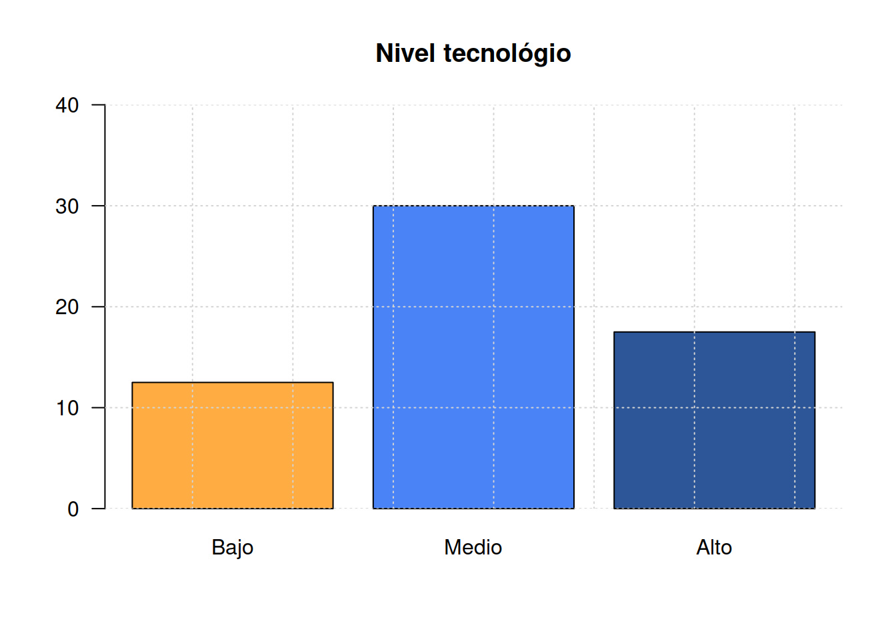

Para el siguiente grupo de variables defina para cada caso el tipo de variable y la escala de medición
| 1. | Número de botellas plásticas producidas diariamente en un proceso de moldeado, en Agua Limpia S.A |
| 2. | Número de defectos observados por gabinete para equipo de cómputo de una distribuidora |
| 3. | Tiempo de respuesta a los pedidos telefónicos en un restaurante |
| 4. | Desperdicio de hojas por día en la fotocopiadora Copiamenos |
| 5. | Tipo de defectos en tarjetas de circuito impreso de un lote de producción. |
| 6. | Temperatura de cocción de la meladura en un proceso de producción de azúcar. |
| 7. | Espesor de las piezas de metal producido en la empresa Tornos S.A. |
| 8. | Técnica de mezclado de cemento tipo A por lote en la Cementera del Norte |
| 9. | Cantidad de corriente en microamperios por cada medición en un cinescopio |
| 10. | Grado de satisfacción de los clientes ante el servicio de mantenimiento de un taller mecánico |
| 11. | Nota obtenida en el examen de estadística |
| 12. | Nivel de estrés de un estudiante antes de una presentar una prueba escrita |
Indique el concepto referido en cada uno de los siguientes enunciados:
| 1. | Divide la muestra en dos partes de igual proporción. |
| 2. | Mide la simetría de la distribución de datos alrededor de la media. |
| 3. | Describe la dispersión de los datos en torno a la media en términos relativos. |
| 4. | Mide la concentración de los datos alrededor de la mediana. |
| 5. | Se obtiene al calcular el cociente entre la desviación estándar y la media aritmética. |
| 6. | Proporciona una medida de la dispersión de los datos respecto a la media. |
| 7. | Mide la diferencia entre el valor del tercer cuartil y el primer cuartil. |
| 8. | Mide la dispersión de los datos respecto a la media sin considerar el signo de las desviaciones. |
| 9. | Calcula la diferencia entre el valor máximo y el valor mínimo en un conjunto de datos. |
| 10. | Representa el valor más frecuente en un conjunto de datos. |
| 11. | Estima la tendencia central en una muestra y es muy sensible a los valores extremos. |
| 12. | Describe el grado de inclinación de la distribución de datos en torno a la media. |
| 13. | Se obtiene al ordenar los datos y seleccionar el valor que se encuentra en la posición central. |
| 14. | Se obtiene al restar el primer cuartil del tercer cuartil en una distribución de datos. |
Responda F (Falso) o V (Verdadero), justificando la respuesta en caso de ser Falsa.
| 1. | La desviación estándar del conjunto de valores 2, 2, 2, 2 y 2 es 2. |
| 2. | En una distribución de frecuencias acampanada, el rango de los datos es aproximadamente igual a seis desviaciones estándar. |
| 3. | Dos conjuntos de datos de tamaños \(n_1\) y \(n_2\) tienen respectivamente promedios \(\bar{x}_{1}\) y \(\bar{x}_{2}\), a partir de esta información, se puede obtener el respectivo estadístico del total de datos (\(\bar{x}\)) |
| 4. | Al hacer una gráfica, las frecuencias deben representarse en el eje de la ordenada. |
| 5. | El histograma, es una presentación muy efectiva de las distribuciones de frecuencias. |
| 6. | El polígono de frecuencias, es especialmente apto para comparar diferentes distribuciones. |
| 7. | Una variable discreta puede ser representada mediante un histograma |
| 8. | El diagrama de barras se utiliza para representar datos continuos. |
| 9. | La relación de escalas en una gráfica debe de ser 1:1 |
| 10. | Las gráficas se representan en el primer cuadrante del plano cartesiano. |
| 11. | Si multiplicamos la variable por una constante, el coeficiente de variación se altera. |
| 12. | La varianza de una constante por una variable es igual a la varianza de la variable. |
| 13. | Al sumar 4 a cada uno de los números de la serie : 2, 6, 5, 9, 1 se obtiene la serie 6, 10, 9, 13 y 5. Las series tienen igual varianza, distinta media y diferente coeficiente de variación. |
Elabore un gráfico para representar adecuadamente la siguiente información:
Durante 5 meses se construyen 134 kilómetros de carretera en la siguiente forma: En el primer mes, 3.60% del total del proyecto; en el segundo més un 7.60% del total; en el tercer més, el 15.3% del total; en el cuarto mes 24.5% del total y en último mes, el 49% restante.
El grupo de Probabilidad y Estadística a cargo de un profesor está conformado por : 9 estudiantes de Ingeniería Electrónica, 6 de Ingeniería de Sistemas, 25 de Ingeniería Civil, 19 de Negocios Internacionales 8 de Biología y 3 de Ingeniería Mecánica. De los que estudian Ingeniería Electrónica 6 son hombres, de los matriculados en Ingeniería de Sistemas 2 son mujeres, de los que estudian Ingeniería Civil 18 son hombres, de los que estudian Negocios internacionales 16 son mujeres, de los que estudian Biología 5 son mujeres y finalmente de los que estudian Ingeniería Mecánica 2 son hombre.
Una consulta en tiendas en linea para memorias USB 128GB arrojó lo siguientes valores:
x=c(60,63,64,67,68,68,68,70,70,71,71,72,72,72,73,73,74,74,75,75,75,75,75,76,76,77,77,79,80,83,83,84,85,86,87,88,88,89,89,91)
stem(x)
The decimal point is 1 digit(s) to the right of the |
6 | 034
6 | 7888
7 | 00112223344
7 | 5555566779
8 | 0334
8 | 5678899
9 | 1Un vendedor convierte los pesos de los paquetes que se producen en su empresa de libras a kilogramos (\(1\) kg \(\simeq\) 2.2 lb.). Como afecta esta conversión la media y la desviación estándar?.
\(\bar{x}=\frac{1}{n}\sum x_{i}\),
\(s=\sqrt{s^2}\),
\(s^2=\frac{1}{(n-1)}\sum (x_{i}-\bar{x})^{2}\)
Para analizar la rapidez con que una máquina etiqueta las botellas en una compañía de jugos, se decide hacer seguimiento al número de botellas etiquetadas por día. A partir de los resultados procesados en R presente un análisis estadístico para el número de botellas etiquetadas por día
summarytools::descr(x) Descriptive Statistics
value
N: 40
value
----------------- --------
Mean 76.08
Std.Dev 7.82
Min 60.00
Q1 71.00
Median 75.00
Q3 83.00
Max 91.00
MAD 7.41
IQR 12.00
CV 0.10
Skewness 0.20
SE.Skewness 0.37
Kurtosis -0.81
N.Valid 40.00
Pct.Valid 100.00Punto 11 pag. 34 notas Alonso
El director de la asociación de comerciantes de tomates del Valle del Cauca estudia el comportamiento de las ventas diarias de los últimos meses para una muestra de 60 nuevos microempresarios en la región. Dos de las variables más importantes a tener en cuenta para el estudio fueron: Ventas (meses Mayo y Junio) y el nivel tecnológico de la empresa. La siguiente información corresponde a las ventas:
May = c(14.3, 14.4, 11.1, 11.2, 11.4, 11.4, 11.4, 11.4, 10.0, 10.5, 10.5, 10.6, 10.7, 12.1, 12.3, 12.4, 12.8, 9.3, 9.2, 9.2, 9.1, 8.4, 8.5, 7.2, 7.1, 6.2, 13.7, 13.8, 15.0, 10.0)
Jun = c(12.0, 12.0, 12.0, 12.7, 12.8, 12.9, 8.0, 8.0, 13.2, 13.3, 13.5, 13.6, 11.0, 11.5, 11.6, 11.9, 10.4, 10.3, 10.7, 9.0, 9.2, 7.4, 7.7, 6.1, 5.9, 14.3, 14.2, 14.8, 15.1, 15.2)El nivel tecnológico de los 60 distribuidores mostró el siguiente comportamiento tomados en el estudio

Descriptive Statistics
Jun May
----------------- -------- --------
Mean 11.34 10.84
Std.Dev 2.65 2.22
Min 5.90 6.20
Q1 9.20 9.20
Median 11.95 10.90
Q3 13.30 12.30
Max 15.20 15.00
MAD 2.37 2.30
IQR 3.80 3.03
CV 0.23 0.20
Skewness -0.48 -0.07
SE.Skewness 0.43 0.43
Kurtosis -0.87 -0.66
N.Valid 30.00 30.00
Pct.Valid 100.00 100.00De acuerdo con la información anterior, responda falso o verdadero a las siguientes premisas. En caso de ser falsa justifique su respuesta.
| a. | La variable ventas mensuales se mide en escala de razón |
| b. | Las ventas de 6.2 millones representan un dato atípico, para la información de Mayo |
| c. | Las ventas de Mayo son más homogéneas que las de Junio |
| d. | La mediana de las ventas en el mes de Junio es de 11.15 |
| e. | La varianza para el mes de Junio es de 5.21 |
| f. | Aproximadamente el 68% de las ventas de Junio están en el intervalo [8.7 ; 13.3]. Nota: el intervalo incluye los valores 8.7 y 13.3. |
| g. | Si el estado cobra un impuesto sobre las ventas del 16%, el promedio del impuesto en Junio es de 1.75 |
| h. | En la variable nivel tecnológico, el promedio es: \(\dfrac{12.5+30+17.5}{3}\) |
| i. | El cuartil 1 \(Q_{1}\) para las ventas de Mayo es 8.0 |
| j. | El tipo de estudio corresponde a la Estadística Inferencial ya que se realizó muesteo |
| k. | La variable nivel tecnológico de la empresa se clasifica como nominal |
| l. | 30 empresas tienen un nivel tecnológico medio |
| m. | Las ventas de Junio muestran sesgo negativo |
Tomado de Arroyo(2012)
A partir del siguiente gráfico de los tiempos de atención en una entidad bancaria determine la media y la mediana (n=500 clientes). Se puede afirmar que la distribución del tiempo de atención es asimétrica positiva?. Se desea establecer los porcentajes de clientes atendidos en los rangos bajos (menos de 10 min), medios (entre 10 min y 12 min), altos (más de 12 min), con el fin de evaluar si en su mayoría los tiempos se concentran en el rango medio. Verifique si esta afirmación es correcta.
En un estudio realizado para investigar la distribución del tiempo de frendo total ( tiempo de reacción más tiempo para pasar del acelerador al freno, en ms) en condiciones reales de manejo a 60 km/h se obtuvo el siguiente resumen de la distribución de los tiempos:
Descriptive Statistics N: 450 x : frenado ------------------------- Mean 529.35 Std.Dev 94.39 Min 277.14 Q1 464.50 Median 527.85 Q3 591.93 Max 804.80 MAD 94.30 IQR 127.33 CV 0.18 Skewness 0.06 SE.Skewness 0.12 Kurtosis -0.23 N.Valid 450.00 Pct.Valid 100.00
¿Qué se concluye en relación con la forma de estos datos?. Acompañe su análisis de un diagrama de cajas
Los pesos en libra de 54 paquetes de hamburguesas fueron obtenidos en
el mostrador de un supermercado de cadena de la ciudad
(mín = 0.75, máx = 14.1 )
The decimal point is 1 digit(s) to the left of the |
7 | 55
8 | 3367799999
9 | 22366667778899
10 | 668888
11 | 22224444778888
12 | 4488
13 | 88
14 | 11\(\displaystyle\sum_{i=1}^{54}(x_{i}-\bar{x})=0\)
\(\displaystyle\sum_{i=1}^{54}x_{i} =56.83\)
\(\displaystyle\sum_{i=1}^{54}(x_{i}-\bar{x})^{2}=1.429387\)
\(\displaystyle\sum_{i=1}^{54}x_{i}^2 = 61.2377\)
Para construir el diagrama de cajas se emplean los cuartiles (\(Q_{1}\), \(Q_{2}\) y \(Q_3\)). Ellos determinan la caja central del diagrama. Las lineas a lado y lado
| a. | Se puede afirmar que existen datos atípicos? |
| b. | Podría afirmarse que más del 20% de los paquetes tienen un peso superior a 1.11 libras? |
| c. | Realice un breve descripción de la información obtenida |
(Tomado de Mendenhall 2006)
El valor alcanzado por estudiantes en un test para medir el razonamiento deductivo mediante una prueba de personalidad de Millón (MPIS) se presenta en la siguiente tabla:
| Edad | Marca de clase | Frecuencia Absoluta | Frecuencia Relativa | Frec. Acum. Absoluta | Frec. Acum. Relativa |
|---|---|---|---|---|---|
| [0-10) | 3 | ||||
| [10-20) | 6 | ||||
| [20-30) | 7 | ||||
| [30-40) | 12 | ||||
| [40-50) | 3 |
A partir de la información responda los siguientes interrogantes:
| a. | Los valores obtenidos se pueden considerar como valores homogéneos? |
| b. | La distribución representada por la tabla se puede considerar como simétrica? |
| c. | Qué indicador de centro podría ser más apropiado para representar los datos? Justifique su respuesta. |
| d. | Describa los resultados obtenidos en la medición. |
Los tiempo en minutos de demora en la entrega de pedidos por parte de dos proveedores de insumos para laboratorio que llamaremos \(P_{A}\) y \(P_{B}\) son los siguientes :
PA=c(13,44,10,11,20,29,30,44,56,63,70,82); cat("Proveedor A: ", PA, "\n")Proveedor A: 13 44 10 11 20 29 30 44 56 63 70 82 PB=c(25,14,20,22,30,33,40,45,49,52,55,58); cat("Proveedor B: ", PB, "\n")Proveedor B: 25 14 20 22 30 33 40 45 49 52 55 58 Con base en la información, cuál proveedor escogería? Justifique su respuesta
(Tomado de Arroyo(2012))
Un una fabrica de de jabones para el aseo personal realizó un estudio con el objetivo de mejorar una linea de este producto, mediante la medición de los pesos (en onzas) de 50 barras.
Los resultados obtenidos y algunos cálculos sobre los datos se presentan a continuación :
x = c(20.3, 19.2, 18.8, 18.5, 18.5, 18.3, 18.3, 18.2, 18.1, 17.7, 17.6,
14.4, 17.4, 17.4, 17.3, 17.3, 17.1, 17.0, 16.6, 16.5, 16.5, 16.5,
16.4, 16.3, 16.2, 16.2, 16.1, 15.9, 15.9, 15.8, 15.8, 15.7, 15.6,
15.6, 15.2, 15.1, 14.8, 14.6, 14.3, 14.3, 14.1, 13.8, 13.7, 13.6,
13.3, 13.1, 12.8, 12.7, 12.6, 11.6)
stem(x)
The decimal point is at the |
11 | 6
12 | 678
13 | 13678
14 | 133468
15 | 126678899
16 | 122345556
17 | 01334467
18 | 1233558
19 | 2
20 | 3Suma x : 798.6 Suma x2 : 12941.46 Suma x3 : 212596.4 Suma x4 : 3537246 sd : 1.949468
Por política de la empresa, el peso del producto debe estar en un 90% de los casos entre mas o menos dos onzas al rededor del peso especificado en la etiquete del producto (16.0 onzas). Un segundo criterio importante es el de establecer si en los datos obtenidos se presentan datos atípicos y si los valores se pueden clasificar como homogéneos, teniendo como referencia un indicador del 10%. En caso de no cumplimiento de los criterios de calidad será necesario detener la producción y llamar a la empresa de mantenimiento para que realice los ajustes necesarios.
Debido a que la muestra obtenida constituye una muestra representativa del proceso, el director de la empresa le pide le ayude a validar los resultados y le indique que decisión debe tomarse a partir de la información obtenida
Un grupo de estudiantes de la universidad, preocupados por el incremento del uso de los vapeadores entre los jóvenes, realizan un estudio acerca de los efectos de su uso sobre los patrones de sueño. Para estudiar el problema miden el tiempo en minutos que se tarda un joven en quedarse dormido. Con el fin de tener un grupo de referencia, la observación se realiza en jóvenes que utilizan el vapeador y los que lo usan. Los resultados obtenidos fueron los siguientes
# Vapeadores
x = c(69.3, 56.0, 22.1, 47.6, 53.2, 48.1, 52.7, 34.4, 60.2, 43.8, 23.2, 33.8, 45.5, 55.2, 48.2)
cat("x = ", x, "\n")x = 69.3 56 22.1 47.6 53.2 48.1 52.7 34.4 60.2 43.8 23.2 33.8 45.5 55.2 48.2 # No vapeadores
y = c(28.6, 25.1, 26.4, 34.9, 29.3, 28.4, 38.5, 30.2, 30.6, 31.8, 41.6, 21.1, 36.0, 37.9, 13.9)
cat("y = ",y, "\n")y = 28.6 25.1 26.4 34.9 29.3 28.4 38.5 30.2 30.6 31.8 41.6 21.1 36 37.9 13.9 cat("\n")summarytools::descr(data.frame(x,y))Descriptive Statistics
x y
----------------- -------- --------
Mean 46.22 30.29
Std.Dev 13.14 7.13
Min 22.10 13.90
Q1 34.40 26.40
Median 48.10 30.20
Q3 55.20 36.00
Max 69.30 41.60
MAD 10.53 6.97
IQR 15.10 8.05
CV 0.28 0.24
Skewness -0.37 -0.49
SE.Skewness 0.58 0.58
Kurtosis -0.75 -0.27
N.Valid 15.00 15.00
Pct.Valid 100.00 100.00De a cuerdo con los valoresa obtenidos es posible afirmar que existen diferencias en los dos grupos observados con referencia al tiempo que se requiere para quedarse dormido?
Determine el valor de verdad (verdadera - V, falsa - F) para cada una de las siguientes afirmaciones. En cada caso justifique su respuesta:
( ) Al construir una gráfica barras, las frecuencia
deben representarse en el eje de las ordenadas.( ) El histograma, es una representación muy efectiva
de las frecuencias obtenidas en una variable categórica.( ) El polígono de frecuencias, es especialmente apto
para comparar datos con diferentes formas.( ) Una variable cualitativa en escala ordinal puede
ser representada mediante un histograma.( ) El diagrama de barras se emplea para representar
datos continuos.( ) La relación de las escalas en un diagrama de
puntos debe ser 1:1 .( ) Las gráficas de puntos o de dispersión se deben
representar en el primer cuadrante del plano cartesiano.( ) Si sumamos una constante a la mitad de los datos,
la media se altera en la mitad de la constante.( ) El gráfico circular se emplea para representar
variables cualitativas medidas en escala ordinal.Diez estudiantes que realizan practica estudiantil reciben un salario mensual durante su trabajo en miles de pesos :
x= c(1.1, 1.2, 1.4, 1.7, 1.9, 1.3, 1.6, 1.4, 1.3, 1.6)
x [1] 1.1 1.2 1.4 1.7 1.9 1.3 1.6 1.4 1.3 1.6El peso de 80 artículos es de 130 kgs. Si 60 de ellos pesan en promedio 120 kgs. ¿Cual será el peso promedio de los 70 artículos restantes?
Construye un ejemplo específico para el caso de:
Una persona que viaja en un vehículo de una ciudad A a una ciudad B, en el viaje de ida la velocidad media es de 40 km/h y de regreso (B -> A) registra una velocidad promedio de 60 km/h. Se pueden calcular los valores de la media y mediana para el viaje completo ?
Describa la relación existente entre la media y la mediana para los siguientes casos :
Realice un bosquejo de su representación gráfica y de la posición de
los indicadores de centro.
El siguiente conjunto de datos incluye información de la última semana de 100 establecimientos sobre sus ventas, costos, utilidad, número de empleados y su estrato socio-económico del barrio donde se encuentran localizados. Realiza un análisis descriptivo de la información suministada, utilizando indicadores de centro, dispersión y forma y graficos que complementen el análisis, que permitan identificar tendencias en las ventas, costos y beneficios , si existe relación entre sus indicadores y su localización, de tal forma que permitan establecer un estado inicial de las empresas para este año.
ventas <-c(41.3, 55.1, 83.4, 61.6, 46.1, 67.4, 59.5, 77.4, 71.7, 61.6, 70.2, 64.1, 61.6, 56.6, 76.8, 65.4, 74.4, 66.4, 62.4, 66.1, 59.6, 45.6, 61.5, 59.7, 49.3, 95.2, 56.0, 75.0, 64.7, 59.3, 51.6, 44.1, 58.2, 52.5, 53.5, 56.0, 59.2, 53.7, 51.3, 59.6, 51.0, 48.7, 49.4, 94.9, 77.0, 56.2, 63.0, 62.6, 56.9, 48.5, 68.0, 50.3, 59.0, 67.6, 46.0, 57.9, 64.9, 61.0, 64.0, 66.2, 51.6, 67.0, 57.6, 68.2, 61.3, 53.7, 71.7, 59.6, 73.9, 66.1, 67.0, 55.8, 64.2, 60.3, 51.2, 68.2, 67.0,60.7, 50.5, 54.5, 54.3, 51.6, 77.1, 53.9, 62.0, 70.5, 61.1, 39.2, 61.3, 56.0, 68.9, 59.7, 53.7, 62.0, 58.4, 69.2, 67.4, 63.8, 55.1, 64.1)
costos =c(35.8, 31.2, 28.7, 39.7, 39.0, 34.8, 25.5, 30.9, 30.0, 37.0, 33.3, 40.9, 38.9, 34.0, 41.5, 30.5, 39.1, 36.0, 29.1, 34.2, 34.3, 45.7, 46.2, 34.1, 39.7, 42.6, 36.8, 39.3, 27.2, 40.7, 41.5, 28.4, 38.3, 31.9, 31.0, 33.9, 39.9, 35.4, 39.8, 44.3, 32.7, 33.3, 34.3, 33.3, 36.9, 42.5, 40.2, 28.3, 30.4, 44.6, 40.7, 26.6, 27.2, 34.7, 39.5, 36.8, 34.5, 42.4, 35.4, 25.6, 43.5, 28.1, 33.0, 29.7, 44.0, 49.3, 39.9, 30.7, 37.2, 36.8, 40.5, 37.4, 25.9, 43.0, 30.2, 34.6, 36.1, 39.9, 28.5, 37.7, 32.7, 40.4, 29.6, 34.0, 34.5, 34.4, 35.8, 28.2, 32.9, 38.6, 47.9, 29.2, 28.0, 31.7, 46.0, 37.8, 38.3, 30.7, 40.7, 39.6)
utilidad = c(22.6, 17.5, 19.5, 19.3, 23.0, 26.4, 23.4, 31.3, 30.9, 22.2, 26.1, 34.4, 29.0, 13.7, 21.4, 29.8, 22.3, 22.0, 20.4, 34.0, 19.9, 20.3, 27.0, 14.9, 36.9, 35.2, 29.0, 13.2, 30.6, 23.8, 31.2, 24.0, 33.3, 26.9, 5.9, 27.8, 31.9, 12.3, 14.8, 36.3, 24.4, 24.7, 28.6, 31.7, 26.9, 17.9, 20.8, 18.2, 33.9, 30.3, 29.3, 10.1, 34.6, 25.6, 27.7, 18.0, 31.6, 12.5, 29.2, 23.0, 24.4, 30.5, 15.3, 23.8, 34.7, 23.5, 24.4, 34.3, 23.6, 11.4, 10.0, 21.5, 31.3, 36.1, 29.7, 23.5, 26.8, 22.8, 29.9, 30.6, 20.3, 23.5, 30.6, 19.5, 32.5, 34.4, 18.9, 30.7, 27.9, 20.5, 25.7, 17.2, 36.0, 19.0, 18.4, 23.4, 30.8, 18.2, 16.8, 33.1)
empleados = c(14, 18, 17, 14, 16, 22, 17, 11, 9, 2, 15, 24, 18, 26, 21, 16, 9, 24, 10, 16, 17, 10, 11, 16, 22, 16, 15, 11, 13, 25, 6, 20, 17, 7, 14, 22, 21, 15, 16, 6, 10, 16, 13, 25, 14, 23, 15, 16, 9, 26, 21, 15, 24, 14, 9, 3, 18, 15, 15, 12, 16, 18, 24, 16, 23, 17, 15, 20, 16, 13, 11, 13, 13, 9, 26, 11, 8, 17, 15, 16, 13, 23, 16, 20, 17, 15, 25, 14, 20, 20, 10, 14, 13, 20, 20, 17, 15, 15, 16, 13)
estrato =c(5, 3, 3, 3, 5, 4, 2, 4, 5, 2, 2, 3, 3, 4, 6, 6, 6, 3, 5, 5, 2, 5, 4, 5, 2, 2, 2, 5, 4, 4, 3, 4, 4, 4, 3, 6, 2, 4, 6, 5, 4, 5, 3, 3, 2, 3, 2, 2, 5, 2, 2, 6, 3, 6, 6, 4, 5, 6, 5, 3, 3, 2, 3, 3, 2, 4, 5, 5, 2, 5, 2, 2, 2, 6, 2, 5, 3, 6, 2, 4, 3, 2, 6, 2, 5, 5, 4, 3, 3, 4, 3, 6, 4, 5, 6, 5, 5, 6, 4, 4)
datosENE =data.frame(id=1:100,ventas,costos,utilidad,empleados, estrato)
summarytools::descr(datosENE[,2:6])Descriptive Statistics
costos empleados estrato utilidad ventas
----------------- -------- ----------- --------- ---------- --------
Mean 35.78 15.85 3.85 24.89 61.07
Std.Dev 5.49 5.14 1.40 6.96 9.76
Min 25.50 2.00 2.00 5.90 39.20
Q1 31.10 13.00 3.00 20.10 54.40
Median 35.60 16.00 4.00 24.40 60.85
Q3 39.85 20.00 5.00 30.60 66.70
Max 49.30 26.00 6.00 36.90 95.20
MAD 6.38 4.45 1.48 8.08 9.12
IQR 8.67 7.00 2.00 10.40 12.10
CV 0.15 0.32 0.36 0.28 0.16
Skewness 0.13 -0.06 0.09 -0.34 0.73
SE.Skewness 0.24 0.24 0.24 0.24 0.24
Kurtosis -0.70 -0.15 -1.31 -0.56 1.58
N.Valid 100.00 100.00 100.00 100.00 100.00
Pct.Valid 100.00 100.00 100.00 100.00 100.00Una característica de calidad importante en un proceso de llenado automático es el peso del producto. Las empresas cuidan que el producto final no tenga pesos por debajo del anunciado en su etiqueta, pues de hacerlo puede incurrir en multas y pérdida de algunos de sus clientes. Por el contrario, si el producto se empaca muy por encima del peso especificado, se estará incurriendo en sobrecostos para la empresa.
Una empresa que comercializa café instantáneo descafeinado, en presentación de 6.5 gramos, tiene dentro sus directrices, al comenzar el día, tomar una muestra de 50 bolsas y medir su peso. Se espera que los resultados estén entre más o menos 1.5 gramos alrededor del valor especificado en la etiqueta. Si el porcentaje de bolsas en la muestra es superior al 95 %, se da inicio al proceso. Si alcanza porcentajes entre el 85 % y 95 %, se debe llamar al ingeniero de planta para que realice los ajustes necesarios. Y finalmente, si se encuentran porcentajes inferiores al 85 % se debe reportar a la empresa de mantenimiento, para que realicen ajustes mayores.
El día de hoy se recogió información de una muestra de 50 bolsas. A continuación se presentan los datos y su representación gráfica.
Realice un breve análisis de la información suministrada y a partir de ellos realice recomendaciones.
# Diagrama de tallos y hojas, peso del paquete de café instantáneo en gramos
stem(c(4.3, 4.7, 4.8, 4.8, 4.9, 5.0, 5.1, 5.2, 5.4, 5.5, 5.7, 5.7, 5.8, 5.8, 5.9, 5.9, 6.0, 6.0, 6.1, 6.1, 6.1, 6.1, 6.2, 6.2, 6.2, 6.3, 6.3, 6.4, 6.4, 6.5, 6.5, 6.6, 6.7, 7.0, 7.2, 7.3, 7.4, 7.6, 7.7, 7.8, 8.2, 8.5, 8.7, 8.9))
The decimal point is at the |
4 | 3
4 | 7889
5 | 0124
5 | 5778899
6 | 0011112223344
6 | 5567
7 | 0234
7 | 678
8 | 2
8 | 579# Datos de los pesos de los paquetes de café instantáneo
pesos <- c(4.3, 4.7, 4.8, 4.8, 4.9, 5.0, 5.1, 5.2, 5.4, 5.5, 5.7, 5.7, 5.8, 5.8, 5.9, 5.9, 6.0, 6.0, 6.1, 6.1, 6.1, 6.1, 6.2, 6.2, 6.2, 6.3, 6.3, 6.4, 6.4, 6.5, 6.5, 6.6, 6.7, 7.0, 7.2, 7.3, 7.4, 7.6, 7.7, 7.8, 8.2, 8.5, 8.7, 8.9)
# Construcción de la tabla de frecuencias acumuladas
tabla_frecuencias <- table(cut(pesos, breaks = seq(4.0, 9.0, by = 0.5), right = TRUE))
frecuencia_acumulada <- cumsum(tabla_frecuencias)
# Creación de la ojiva
plot(seq(4.25, 8.75, by = 0.5), frecuencia_acumulada, type = "o",
xlab = "Peso del paquete de café (gramos)", ylab = "Frecuencia acumulada",
main = "Ojiva del Peso de Paquetes de Café Instantáneo",
xlim = c(4, 9), ylim = c(0, max(frecuencia_acumulada) + 5),
col = "blue", pch = 16, las=1)
grid()Una de las principales medidas de la calidad de servicio que ofrece una organización y sus departamentos es la rapidez con la que responde a las quejas de sus clientes. El Centro de Servicios Informáticos de la Universidad está interesado en disminuir el tiempo de atención a quejas que se presentan relacionados con el mal funcionamiento de las máquinas virtuales tanto para profesores, colaboradores como para estudiantes que realizan prácticas de investigación. Con el fin de estudiar el comportamiento de este indicador, selecciona una muestra de los tiempos de atención en horas que se presentan a continuación:
2 | 3 4 | 4 6 | 4 7 8 1 1 1 3 4 5 5 8 9 8 | 1 3 0 0 4 5 6 7 10 | 1 6 6 6 8 8 9 9 9 9 0 3 5 5 5 5 8 12 | 1 4 5 7 1 1 3 8 8 14 | 6 2
10.6 10.9 13.3 11.5 11.5 9.0 7.1 10.8 13.1 8.1 14.6 9.4 12.1 7.1 7.3 6.8 13.1 10.8 13.8 9.6 11.5 6.7 7.8 9.7 9.5 7.5 10.1 12.7 12.5 7.1 10.9 10.6 12.4 10.6 9.0 7.5 11.5 7.4 11.3 11.8 6.4 2.3 15.2 5.4 10.9 8.3 10.9 7.9 13.8 11.0
\(\sum_{i=1}^{50} x_i = 500.7\)
\(\sum_{i=1}^{50} x_i^2 = 5869.69\)
\(\sum_{i=1}^{50} (x_i - \bar{x})^2 = 336.4\)
La auditoría de la universidad desea conocer si el Centro Informático está cumpliendo con lineamientos establecidos por las normas para este tipo de servicios, dentro de los cuales se destacan:
El responsable de la auditoría le pide revise cada uno de los lineamientos y su cumplimiento y realizar un breve informe.
Una entidad financiera está interesado en mejorar la eficiencia en el tiempo de procesamiento de solicitudes de préstamos. Con este fin, ha seleccionado una muestra de los tiempos de procesamiento (en horas) de 100 solicitudes recientes. Los resultados se muestran a continuación, junto con un análisis gráfico.
# Simulando los datos para tiempos de procesamiento de préstamos
set.seed(123)
tiempos <- round(rnorm(100, mean = 18, sd = 4),1)
# Mostrando el diagrama de tallo y hojas
stem(tiempos)
The decimal point is at the |
8 | 8
10 | 138
12 | 9914577999
14 | 1222355688
16 | 001124557788911111247889
18 | 023455679002345567788
20 | 0223688134567
22 | 0014689045
24 | 11291
26 | 277# Imprimiendo los datos simulados
tiempos [1] 15.8 17.1 24.2 18.3 18.5 24.9 19.8 12.9 15.3 16.2 22.9 19.4 19.6 18.4 15.8
[16] 25.1 20.0 10.1 20.8 16.1 13.7 17.1 13.9 15.1 15.5 11.3 21.4 18.6 13.4 23.0
[31] 19.7 16.8 21.6 21.5 21.3 20.8 20.2 17.8 16.8 16.5 15.2 17.2 12.9 26.7 22.8
[46] 13.5 16.4 16.1 21.1 17.7 19.0 17.9 17.8 23.5 17.1 24.1 11.8 20.3 18.5 18.9
[61] 19.5 16.0 16.7 13.9 13.7 19.2 19.8 18.2 21.7 26.2 16.0 8.8 22.0 15.2 15.2
[76] 22.1 16.9 13.1 18.7 17.4 18.0 19.5 16.5 20.6 17.1 19.3 22.4 19.7 16.7 22.6
[91] 22.0 20.2 19.0 15.5 23.4 15.6 26.7 24.1 17.1 13.9# Generando una gráfica simple para visualizar la distribución de los tiempos
plot(tiempos, type = "b", main = "Distribución de Tiempos de Procesamiento de Préstamos", xlab = "Número de Solicitud", ylab = "Tiempo de Procesamiento (horas)")summarytools::descr(tiempos)Descriptive Statistics
value
N: 100
value
----------------- --------
Mean 18.36
Std.Dev 3.65
Min 8.80
Q1 16.00
Median 18.25
Q3 20.80
Max 26.70
MAD 3.56
IQR 4.80
CV 0.20
Skewness 0.06
SE.Skewness 0.24
Kurtosis -0.22
N.Valid 100.00
Pct.Valid 100.00Criterios establecidos por el banco:
El director de operaciones del banco ha solicitado una revisión de estos criterios y un informe breve sobre el cumplimiento y posibles mejoras en el proceso.